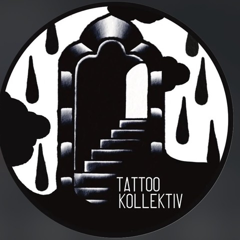

BLUTHANDWERK TÄTOWIERUNGEN
Einverständniserklärung
Tattoo Kollektiv · Digitale EVE · Entwurf 2.0

Schritt 1 von 6
PROTOTYP · Keine echten Gesundheits- oder Kundendaten eingeben, bis Datenschutz und sichere Abläufe geklärt sind. Keine verbindliche Rechtsprüfung.